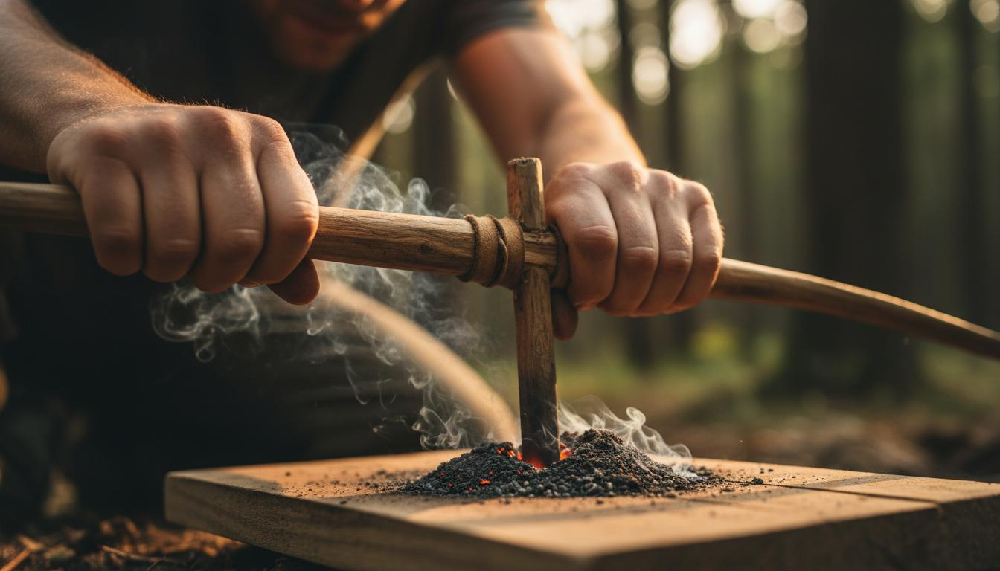
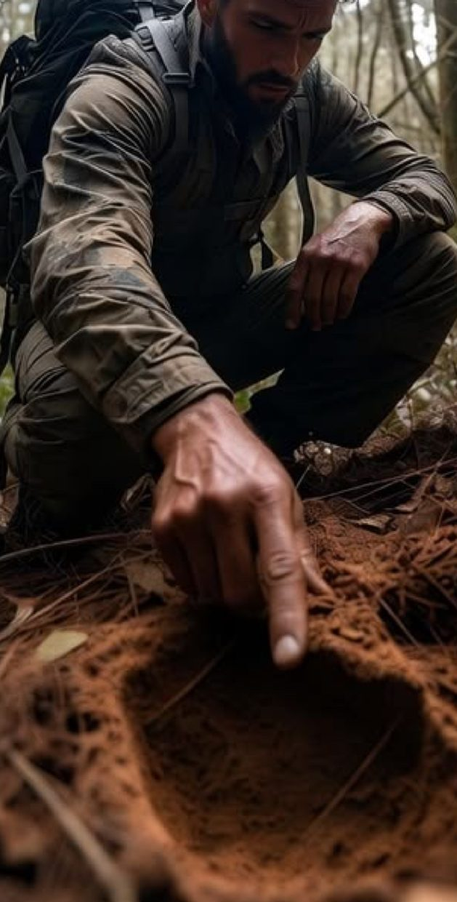

Il corpo fa la prima mossa.
La consapevolezza arriva dopo.
Gli strumenti su cui mi appoggio, da dove vengono e come sono entrati nella mia vita prima che nei miei corsi.





Due mondi che di solito
non si parlano.
Il bagno nel bosco è introspettivo, lento, sensoriale. Il survival è avventuroso, attivo, fatto di mani. Non mi riconosco in nessuno dei due presi da soli: li metto in relazione.
Fare
Fuoco · riparo · autonomia
Sentire
Silenzio · sensi · presenza
Prima il gesto,
poi le parole.
Non siamo solo testa, non siamo solo corpo: si impara tanto più quanto più si è coinvolti.
Da dove vengono,
dove li ho incontrati.
Per ognuno: cos’è, l’origine, il punto della mia vita in cui è entrato, e come si vede nel bosco con te.

Il corpo fa la prima mossa
Fare, osservare, dare un nome, portarlo a casa. Poi il ciclo ricomincia.
- Da dove viene
- Dalle idee di John Dewey e dal ciclo dell’apprendimento esperienziale di David Kolb: si impara dall’esperienza vissuta.
- Nella mia vita
- Ho letto centinaia di libri e ne ricordo poco. Ricordo ogni esperienza vissuta con il corpo, con le emozioni che c’erano.
- Nel bosco con te
- Prima una sfida concreta nel bosco. Le parole arrivano dopo.

Testa, cuore, mani
Pensiero, emozioni e corpo coinvolti nello stesso momento.
- Da dove viene
- Dall’educatore svizzero Johann Heinrich Pestalozzi, due secoli fa: si impara con la testa, il cuore e le mani.
- Nella mia vita
- Per anni sono stato quasi solo testa: designer tra Svizzera, Londra e Australia. Avevo riparo, acqua, cibo, eppure mi sentivo in sopravvivenza. Il corpo è tornato con la terra.
- Nel bosco con te
- Ogni attività chiede insieme azione, pensiero e relazione. Non si osserva: si partecipa.

Sentirsi parte del bosco
Domande, storie e pratiche invece di spiegazioni.
- Da dove viene
- Il Coyote Mentoring nasce nella Wilderness Awareness School, con Jon Young. Il lavoro che riconnette è di Joanna Macy.
- Nella mia vita
- Li conosco da partecipante, insieme alla Ricerca di visione. Non spingo sulla paura: spingo sul desiderio di sentirsi parte di qualcosa che è la natura.
- Nel bosco con te
- Faccio domande invece di dare risposte: il sit spot, le tracce, i giochi dei sensi.

Il ritmo del giorno
Un modello per dare forma all’esperienza seguendo il ritmo naturale del giorno.
- Da dove viene
- È un modello di mentoring sviluppato da Jon Young, ispirato ai cicli della natura.
- Nella mia vita
- Una settimana prima di partire ho cancellato i voli e sono andato in India. Lì ho smesso di pianificare, e le cose hanno cominciato a fluire.
- Nel bosco con te
- Una soglia per entrare, il tempo lento al centro, un ponte verso casa per uscire.

Stare in cerchio
Ognuno ha il suo posto e il suo tempo di parola.
- Da dove viene
- I cerchi di parola sono una pratica antica di molte culture. La comunicazione non violenta è stata formulata da Marshall Rosenberg.
- Nella mia vita
- Ho studiato come condurre i gruppi: facilitatore di gruppi nel 2024, CLIPS nel 2024, formazione per condurre cerchi nel 2025. Da allora conduco un cerchio degli uomini al mese.
- Nel bosco con te
- Spiego, poi mi faccio da parte. Il protagonista è chi partecipa: io sono sostegno, non maestro.

Fuoco, riparo, acqua
Le competenze pratiche del bosco, sempre in sicurezza.
- Da dove viene
- Vengono dalla tradizione di chi viveva nei boschi e dalle scuole di sopravvivenza di oggi.
- Nella mia vita
- Operatore di sopravvivenza outdoor (FISS, 2022) e primo soccorso in ambiente remoto. Del survival ho tenuto l’avventura e la curiosità. La paura l’ho lasciata.
- Nel bosco con te
- Fuoco, acqua e riparo come specchi, non come prove di resistenza.

La terra
Cura, tempi lunghi, ognuno al suo posto, come in natura.
- Da dove viene
- La permacultura è nata in Australia negli anni Settanta, dal lavoro di Bill Mollison e David Holmgren.
- Nella mia vita
- Corso di permacultura in Australia (2014), StOrti Urbani a Firenze, quattro anni in un orto sociale aperto a tutti. Il corpo impara prima della mente.
- Nel bosco con te
- Il tempo lento, la cura, il ciclo: si semina, si aspetta, si raccoglie.
Un’esperienza, passo per passo.
- 1FareUna sfida concreta: accendere un fuoco, cercare l’acqua, camminare in silenzio.
- 2OsservareCosa è successo in me e nel gruppo? Chi ha preso l’iniziativa, dove mi sono bloccato.
- 3Dare un nomeLe parole arrivano dopo. Sono i partecipanti a portare il contenuto.
- 4Portarlo a casaIl tuo lunedì mattina: una consapevolezza da provare nella vita di tutti i giorni.
Si capisce meglio facendo.
Scegli un’esperienza e prova il metodo nel bosco.
Sostegno, non maestro.
- Spiego, poi mi faccio da parteIl protagonista è chi partecipa: io sono sostegno, non maestro.
- Togliere strumenti, togliere maschereDiventare indipendenti in natura toglie strato dopo strato anche dentro. Non per resistere: per lasciarsi andare.
- Il sentiero è il luogo, non il mezzoNon si tratta di arrivare da qualche parte. Si tratta di abitare il sentiero.
- Non serve resistere, serve appartenereNon spingo sulla paura: spingo sul desiderio di sentirsi parte della natura.
Cosa è, e cosa non è.
Survival della paura e della catastrofe
Avventura per sentirsi parte del bosco
Un guru che spiega come vivere
Un compagno di cordata che sta imparando
Un weekend di benessere da consumare
Un’esperienza da attraversare con il corpo
Teoria e slide
Fuoco, acqua, riparo, silenzio